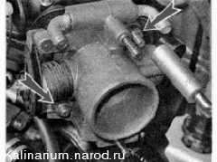

Дроссельный узел - снятие, замена прокладки и установкаСовет Дроссельный узел можно снять, не сливая охлаждающую жидкость. Для этого потребуются два болта М12 любой длины.
Приступать к выполнению работы следует только после остывания двигателя до безопасной температуры (не выше 45 'С). Снятие 1. Подготавливаем автомобиль к выполнению ремонта 2. Снимаем декоративную накладку 3. Отвернув пробку расширительного бачка, сбрасываем избыточное давление из системы охлаждения двигателя. 4. Снимаем шланг подвода воздуха к дроссельной заслонке 5. Отсоединяем колодку жгута проводов от датчика положения дроссельной заслонки 6. Отсоединяем колодку проводов от регулятора холостого хода 7. Крестовой отверткой ослабшем затяжку хомутов крепления двух шлангов подвода охлаждающей жидкости 1, шланга системы вентиляции картера 2 и шланга адсорбера 3. 
13. Снимаем дроссельный узел со шпилек. Извлекаем уплотнительное резиновое кольцо из канавки фланца 8. Отсоединяем от дроссельного узла шланг системы вентиляции картера и шланг клапана продувки адсорбера. 9. Отсоединяем шланг отвода охлаждающей жидкости из корпуса дроссельной заслонки. Глушим шланг болтом M12. 10. Аналогично отсоединяем от корпуса дроссельной заслонки шланг подвода охлаждающей жидкости. Чтобы болты не выпали, затяните хомуты шлангов. 11. Отсоединяем от сектора трос привода дроссельной заслонки 12. Торцовым ключом на 13 мм отворачиваем две гайки крепления дроссельного узла к фланцу ресивера. |